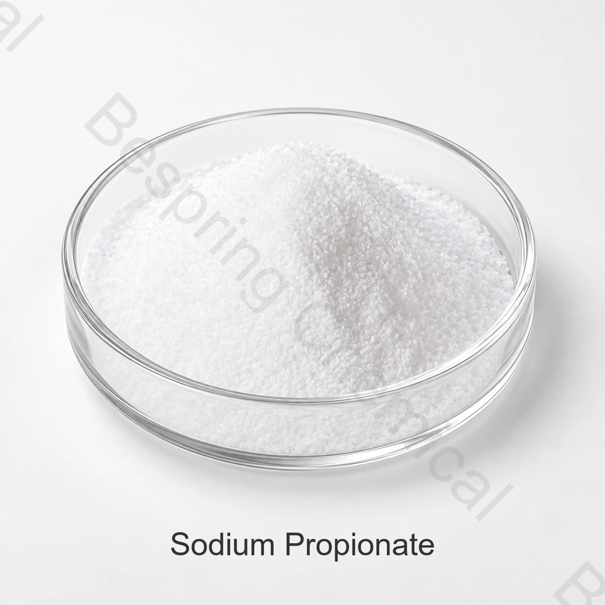

Pan y rollos
Evaluar el control de moldes, el sabor y la vida útil en la formulación real del pan.
Ingrediente de grado alimentario · Conservante · INS 281
El propionato de sodio es la sal de sodio de ácido propiónico, utilizada en los alimentos de panadería seleccionados como conservante para ayudar a controlar los mohos y extender la vida útil.

Imagen del producto · confirme grado y embalaje al comprar
Descripción del producto
Ensayo de referencia≥99.0%
Embalaje estándarBolsa de 25 kg
Carga de contenedores16 MT / 20' FCL
CalificaciónCOA y certificados bajo petición
El propionato de sodio de grado alimentario, también llamado propanoato de sodio, es INS 281, CAS 137-40-6 y fórmula C3H5O2Na.
Los límites comerciales suministrados deben ajustarse a las normas de grado exacto, categoría de alimentos y mercado objetivo. Un nombre de producto por sí solo no establece la conformidad reglamentaria.
Selección de aplicaciones
Confirme el uso legal, la dosis, el rendimiento técnico y el impacto sensorial en el producto terminado.
Evaluar el control de moldes, el sabor y la vida útil en la formulación real del pan.
Se utiliza en productos de panadería adecuados después de confirmar dosis, pH y impacto sensorial.
Confirme dispersión, compatibilidad y requisitos declarados de conservación.
El eficacia conservante depende del pH del producto, la actividad de agua y la higiene del proceso.
Validar la eficacia mediante pruebas de desafío o de vida útil.
Especifique el tamaño de partículas, el punto de adición y las condiciones de producción.
Especificación comercial de referencia
La tabla presenta especificaciones comerciales de referencia. El COA informa los resultados del lote; la especificación acordada define los criterios de aceptación.
Deslice o use el teclado para leer todas las columnas
| Parámetro de ensayo | Especificación |
|---|---|
| Apariencia | Cristales blancos o polvo |
| Contenido del propionato de sodio, base seca | ≥99.0% |
| pH, 10% de solución acuosa a 20°C | 8.0–10.5 |
| Pérdida por secado | ≤0.0003% |
| Alkalinity, como carbonato de sodio | Cumple el ensayo |
| Metales pesados | No se indica en la celda de valor suministrada |
| Plomo | ≤0.001% |
| Arsénico, como2O3 | ≤0.0003% |
| Hierro | ≤0.0025% |
Criterios de aceptación: el límite comercial de pérdida por secado de 0.0003% requiere un método y una base analítica explícitos. El límite de metales pesados debe acordarse por separado; la tabla no establece un valor para ese parámetro.
Documentos para la homologación
Solicite la especificación/TDS actual, SDS, métodos y COA representativo o de lote.
Verifique los documentos HACCP, Kosher, Halal e ISO aplicables para el producto y sitio exactos.
Consulte FAO/OMS JECFA sodium propionate record para el contexto de identidad.
Almacenamiento y manipulación
Preguntas del comprador
El propionato de sodio es la sal de sodio de ácido propiónico, utilizada en los alimentos de panadería seleccionados como conservante para ayudar a controlar los mohos y extender la vida útil. Validar el uso legal y el rendimiento para la comida exacta.
La referencia comercial indica ≥99.0%. Confirme la especificación firmada y COA.
El embalaje de referencia es de 25 kg por bolsa y el pedido mínimo es de 500 kg.
Solicitar especificación/TDS, SDS, COA y certificados de grado alimentario aplicables.
Proporcionar aplicación, grado o forma de hidratación, especificación, cantidad, destino y fecha de entrega.
Ingredientes relacionados
Revise la identidad, la especificación, las aplicaciones y los detalles de la fuente para este ingrediente relacionado.
Revise la identidad, la especificación, las aplicaciones y los detalles de la fuente para este ingrediente relacionado.
Revise la identidad, la especificación, las aplicaciones y los detalles de la fuente para este ingrediente relacionado.
Suministro adaptado a la aplicación
Indique la aplicación, la especificación, la cantidad, el embalaje, el destino y los documentos necesarios.
Indique el grado y el mercado de destino para confirmar qué documentos están disponibles para su pedido.
Una referencia externa no es un certificado de lote ni una especificación de Bespring.